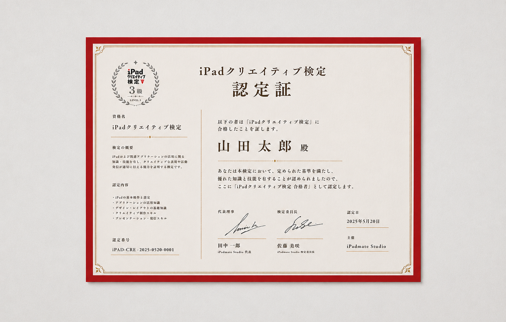

01
01
iPad純正
iPadOS 26
基本操作や共有、書き出しなど制作を支える操作を確認します。

About
iPadクリエイティブ検定は、iPadを活用したクリエイティブスキルを評価・認定する検定制度です。受験者は実技試験を通じて、イラスト、デザイン、動画編集、ノートテイキング、iPad活用に関する課題に取り組みます。知識だけでなく、実際に作品を生み出す力を総合的に評価します。
Categories
実際にiPadで作品を制作しながら、創作スキルと活用力を評価する実践型検定です。５つのカテゴリに採点基準を設け、総合点とカテゴリごとの基準をもとに合否を判定します。
01
iPadOS 26
基本操作や共有、書き出しなど制作を支える操作を確認します。
 02
02
Procreate
ブラシやレイヤーを使い、伝えたい世界観を描く力を確認します。
 03
03
Canva
文字や写真を整え、目的に合った見せ方にまとめる力を見ます。
 04
04
CapCut
カット、テロップ、音の調整で、短い動画を仕上げます。
 05
05
Goodnotes
情報を整理し、あとから見返しやすいノートを作ります。
Certificate
合格者にはデジタル認定証を発行。いつでもどこでも提示できます。
SNSやブログに掲載して、あなたのスキルをアピールできます。
ポートフォリオや作品集に掲載して、信頼性を高めることができます。
履歴書や職務経歴書に「iPadクリエイティブ検定3級取得」と記載できます。


段階的にスキルを高め、プロレベルを目指します。
Official Guidebook
3級の出題カテゴリに対応した公式ガイドブックを発売予定です。
試験前の確認、苦手分野の復習、直前対策に活用できます。
Exam
| 試験名 | iPadクリエイティブ検定 3級 |
|---|---|
| 試験日 | 2026年8月8日 |
| 試験時間 | 2時間 |
| 形式 | 対面実技試験 |
| 会場 | iPadmate Studio 東京校（自由が丘） / 京都校（御所南） |
| 受験料 | 4,980円 |
| 申込期間 | 2026年7月1日から7月15日まで |
| 開始時間 | 午前の部 12:00から / 午後の部 15:00から |
| 定員 | 東京校 16名 / 京都校 8名 |
| 持ち物 | iPad、Apple Pencil、使用アプリ、受験票、本人確認できるもの |
| アプリ条件 | Procreate / Canva / CapCut / Goodnotes / iPadOS 26 指定アプリを事前にインストール。各アプリは最新版推奨。iPadOSを最新にアップデート。 |
| 結果発表 | 2026年9月上旬にメールで通知。 合格者には認定カードを発送。 |
| 合格基準 | 総合点80%以上、かつカテゴリごとの基準点を満たすこと |
Flow
希望会場と時間を選んで申し込みます。
出題範囲を確認し、実技問題に備えます。※問題集の購入は必須ではありません。
東京校または京都校で、2時間の実技試験を受けます。
採点後、メールで結果をお知らせします。
合格者へ認定カードを発送します。
FAQ
受験できます。小学生から社会人まで、iPadでの制作に興味がある方を対象にしています。
持参を想定しています。貸出の有無は正式案内でお知らせします。
ProcreateやGoodnotesを使うため、Apple Pencilの持参を推奨します。
民間資格として、履歴書やプロフィールに記載できます。記載例は「iPadクリエイティブ検定 3級 合格」です。
本検定は、iPadmate Studioが独自に企画・運営する民間検定です。Apple Inc.およびApple Japan, Inc.とは関係ありません。